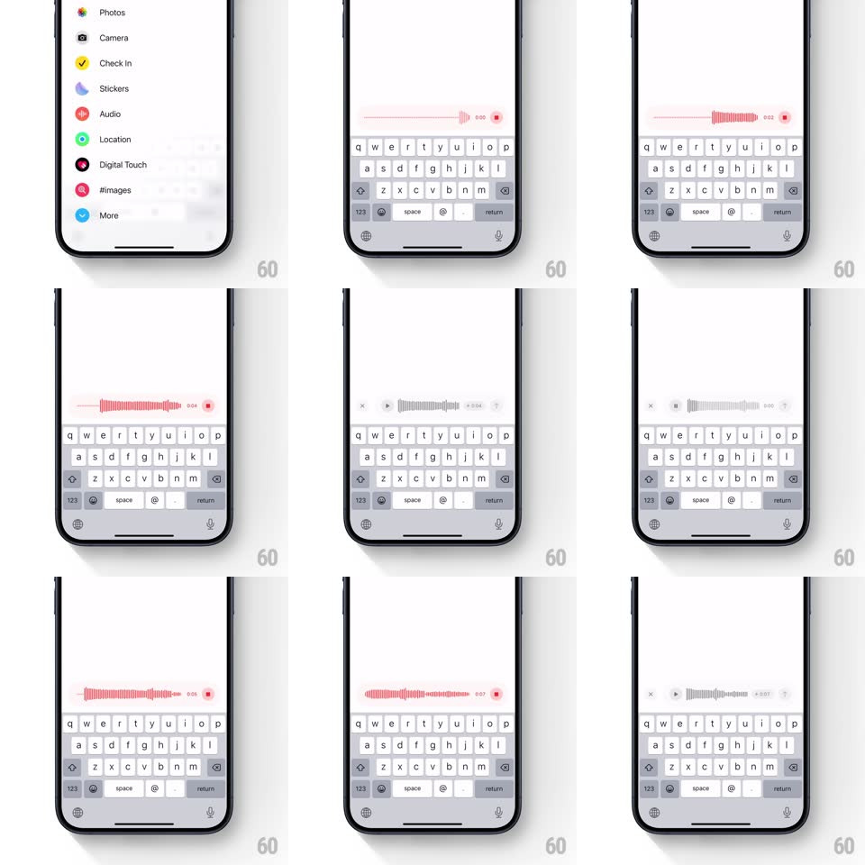

Media
Frame-by-frame

Rebuild this interaction 1:1: iMessage's audio message flow - the text field morphs into a live red waveform recorder with a counter and stop square, then morphs again into a playback row with play button and gray waveform, with springy transitions between every state.

Rebuild this interaction 1:1: iMessage's audio message flow - the text field morphs into a live red waveform recorder with a counter and stop square, then morphs again into a playback row with play button and gray waveform, with springy transitions between every state. ## Integration Integration: stack-agnostic spec - springs given as stiffness/damping, timed motions as duration + curve; map every value to your framework and animation library of choice. ## Scene iMessage conversation with the composer above the keyboard. Recording state: the field becomes a red waveform strip with elapsed time and a red stop square. Playback state: a rounded bubble in the composer holding x (delete), play triangle, gray waveform, and duration. ## Motion spec Pattern: composer-field morph between text, recording, and playback states. - Tap the mic: the text field's content fades, the field's border color shifts red, and a seed waveform grows in from the right with a spring (spring ~380/18) - the mic glyph rotating out as the stop square rotates in. - While recording: live waveform bars append from the right at ~20fps, heights springing to their amplitude (spring ~300/16), the whole strip scrolling left smoothly once full; the timer ticks with a subtle digit roll. - Tap stop: the red bars desaturate to gray in a left-to-right sweep (300ms), the stop square morphs into a play triangle (icon draw, 200ms), and the x + duration fade in at the ends (150ms). - Tap x: the bubble collapses horizontally back into the empty text field (spring ~420/24, width and height easing together). - Re-record: the playback bubble flushes back to the red live state in one spring, no intermediate text state. ## Calibration - The waveform is the field - no modal, no separate recording screen. - Red = recording, gray = recorded; the sweep between them is the state change made visible. ## Reduced motion States crossfade; waveform bars update without springs. ## Don't miss - Every transition is a morph of the same composer surface - never a push or a popover. - The stop-to-play icon swap happens inside the same circular button - shape continuity.